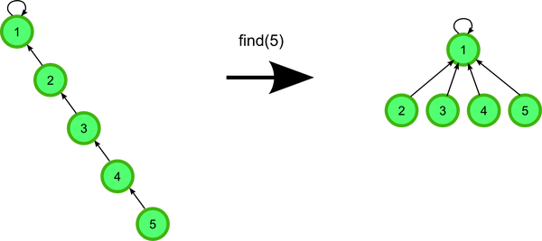

In order to keep track of the connected components of a minimum spanning tree when implementing Kruskal's algorithm, a disjoint-set data structure should be used.
Disjoint-set data structure, also called union-find data structure, is a data structure that keeps track of a set of elements partitioned into a number of disjoint subsets.
A disjoint-set data structure supports following operations:
MAKE-SET(x)creates a new set whose only member is \(x\)UNION(x,y)unites the dynamic sets that contains \(x\) and \(y\), into a new set that is the union of these two sets.FIND-SET(x)returns the representative of the set containing \(x\).
Linked-List Implementation
Each set is represented by its own linked list. The object for each set has attributes head, pointing to the first object in the list, and tail, pointing to the last object. Each object in the linked list contains a set member, a pointer to the next object in the list, and a pointer back to the set object.

Weighted-Union Heuristic: And each linked list also includes the length of the list and we always append the shorter list onto the longer.
Using the linked-list representation of disjoint sets and the weighted-union heuristic, a sequence of \(m\) MAKE-SET, UNION, and FIND-SET, \(n\) of which are MAKE-SET operations, takes \(O(m+n\lg n)\) time.
class Node:
"""
class Node for double liked list
"""
def __init__(self, elem):
self.prev = None
self.elem = elem
self.next = None
def __hash__(self):
return hash(self.elem)
def __eq__(self, x, y):
return x.elem == y.elem
class LinkedList:
def __init__(self):
self.head = None
self.tail = None
self.length = 0
def add(self, node):
"""
add element to disjoint set
"""
if self.head:
node.prev = self
self.tail.next = node
self.tail = node
else:
self.head = node
self.tail = node
node.prev = self
self.length += 1
def __len__(self):
return self.length
def set_length(self, l):
self.length = l
def __iter__(self):
next_node = self.head
while next_node:
yield next_node
next_node = next_node.next
class DisjointSet:
def __init__(self):
self.sets = []
def make_set(self, node):
"""
creates a new set whose only member (and thus representative) is x.
"""
alist = LinkedList()
alist.add(node)
self.sets.append(alist)
return alist
def union(self, nodex, nodey):
"""
unites the dynamic sets that contain x and y, into a new set that is the union of these two sets.
"""
listx = self.find_set(nodex)
listy = self.find_set(nodey)
# append the shorter list onto the longer.
if len(listx) > len(listy):
listx.tail.next = listy.head
for y in listy:
y.prev = listx
listx.tail = listy.tail
listx.set_length = len(listx) + len(listy)
self.sets.remove(listy)
else:
listy.tail.next = listx.head
for x in listx:
x.prev = listy
listy.tail = listx.tail
listy.setlength = len(listx) + len(listy)
self.sets.remove(listx)
def find_set(self, node):
"""
returns the representative of the set containing x
"""
return node.prev
def connected_components(self):
for link_list in self.sets:
print('( ', end='')
for node in link_list:
print(node.elem, end=' ')
print(') ', end='')
def __len__(self):
return len(self.sets)
Forest Implementation of Disjoint-Set
Disjoint-set forest, a faster implementation of disjoint sets, uses rooted trees represent sets, with each node containing one member and each tree representing one set. In a disjoint-set forest, each member points only to its parents. The root of each tree contains the representative and is its own parent.

Union by Rank: For each node, we maintain a rank, which is an upper bound on the hight of the node. We make the root with smaller rank point to the root with larger rank during a Union operation.
Path Compression: When we call find_set, we traverse the path from a node up to its root. Instead of just returning root, we will link all the nodes in this path directly to root.

class DisjointSet:
"""
Disjoint set data structure
"""
def __init__(self):
self.sets = []
self.parent = {}
self.rank = {}
def make_set(self, node):
"""
creates a new set whose only member (and thus representative) is x.
"""
self.parent[node] = node
self.sets.append(node)
self.rank[node] = 0
def union(self, x, y):
"""
unites the dynamic sets that contain x and y, into a new set that is the union of these two sets.
"""
x_root = self.find_set(x)
y_root = self.find_set(y)
if x_root == y_root:
return
if self.rank[x_root] > self.rank[y_root]:
self.parent[y_root] = x_root
else:
self.parent[x_root] = y_root
if self.rank[x_root] == self.rank[y_root]:
self.rank[y_root] = self.rank[y_root] + 1
def find_set(self, x):
"""
returns the representative of the set containing x
"""
if self.parent[x] != x:
self.parent[x] = self.find_set(self.parent[x])
return self.parent[x]
Reference
- Cormen, Leiserson, Rivest, and Stein. 2009. Introduction to Algorithms (3rd edition)
- Disjoint-set Data Structure MIT